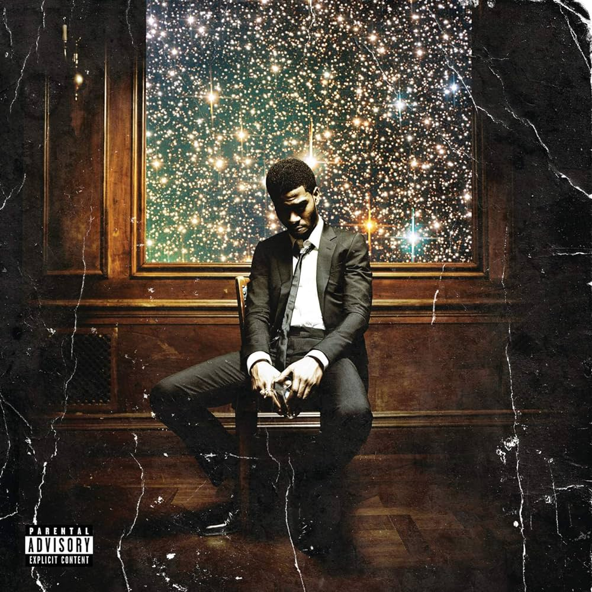
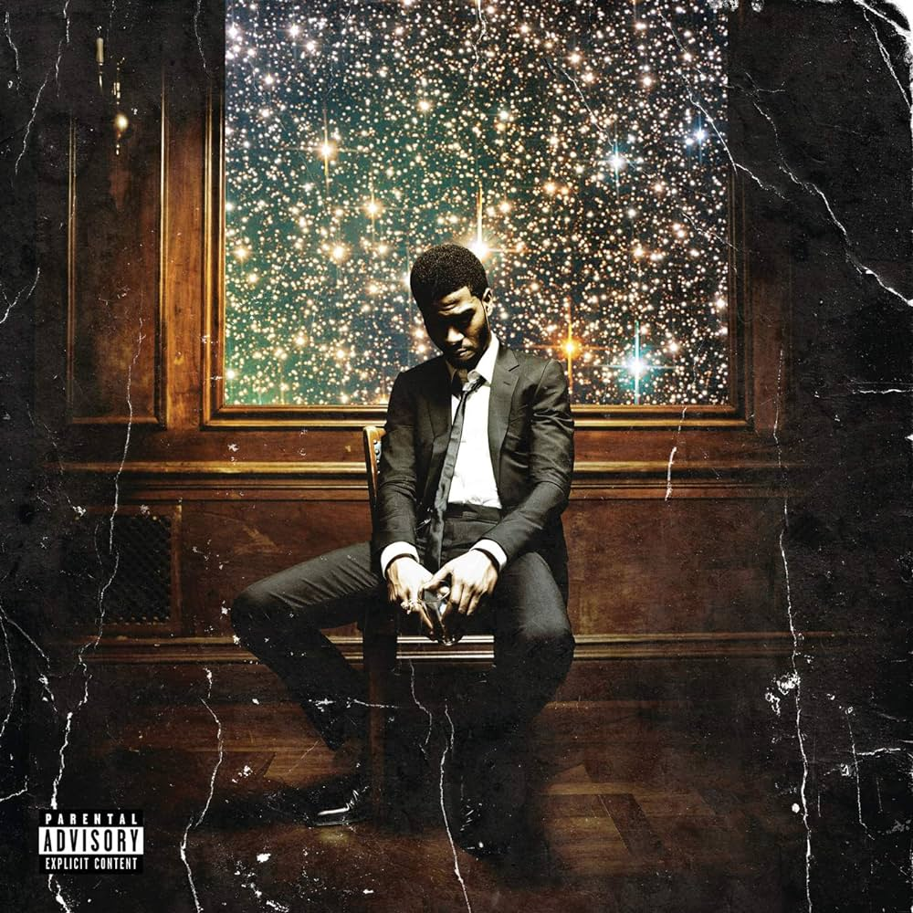

A lot of the music I enjoy come from late 2000s and early 2010s. There have been songs more recently that I've enjoyed greatly as well. Some of the artists I enjoy are listed below.
Avicii's music is always going to have a special place in my heart just because his music was very apparent in my childhood. RIP.

A lot of Kid Cudi's music is very enjoyable for me. Not so much for his recent albums but Man On The Moon and Man On The Moon II had some great songs that I continue to listen to even now.
 
